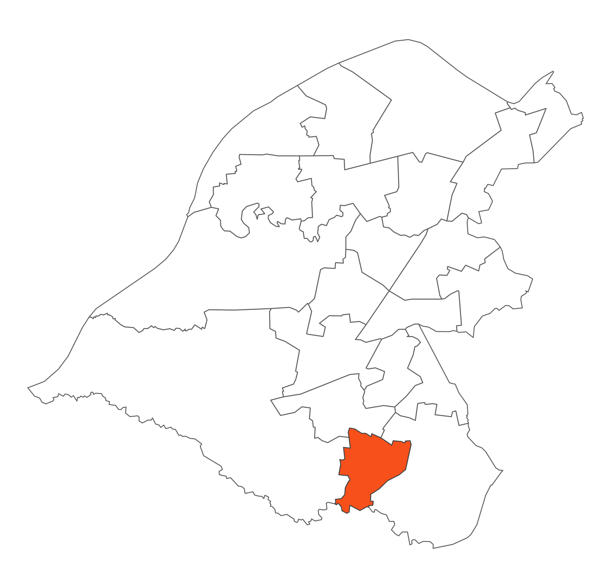

 Hale Central is a densely populated ward located to the south east of Altrincham town centre. It is bounded to the south by the River Bollin and to the north by Altrincham Golf Course and by the residential areas of Hale Barns and Bowdon to the east and west. The heart of the ward is Hale village which enjoys a good variety of independent shops and fashionable bars and restaurants.